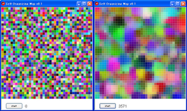

Ruby the Red Gem of Programming
This is an archived post This is an archived post
Index
Next
Self Organizing Map on Shoes
June 27 2009, 8:21 AM
by Victor Goff
Uploaded
Gallery 11
into Shoes Tutorial Note. Just wondering. ;-)
# self_organizing_map.png

Have fun,
Satoshi
55 views and 0 responses